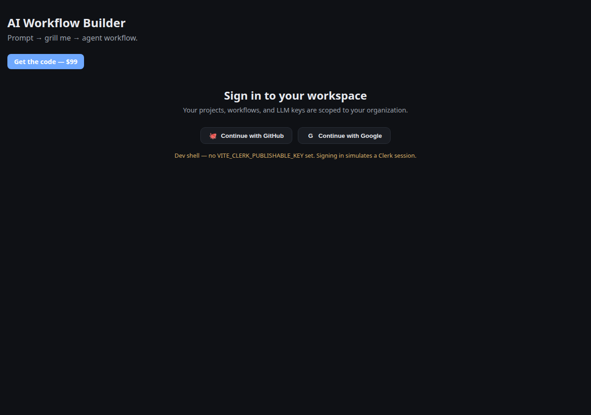

Prompt
Describe what you want in one plain-language prompt — the goal, the inputs, the output you care about.
Self-hosted · MIT licensed · No sign-up, no cloud lock-in
AI Workflow Builder takes a plain-language prompt, interrogates you only about the genuinely ambiguous parts (the Grill-Me loop), and produces a versioned spec, a dependency-checked workflow DAG, and runnable Python orchestration code.

Three stages, one goal: a workflow that runs the first time.
Describe what you want in one plain-language prompt — the goal, the inputs, the output you care about.
Instead of guessing, the builder asks only about what is genuinely ambiguous and resolves it into a versioned spec — before any code exists.
A workflow DAG is scaffolded, checked for cycles and dangling dependencies, and compiled into runnable Python orchestration code.
A complete studio for designing production multi-agent systems.
Asks only the questions that matter, scored by ambiguity — no infinite questionnaires.
Visual node graph with dependency checks — no cycles, no dangling references.
Checks the workflow before it runs, so failures surface at design time, not runtime.
Compiles the validated DAG into runnable Python orchestration code.
Store provider keys locally, encrypted at rest. Your keys never leave your machine.
Download, npm install, npm run dev — done. No accounts, no SaaS, no lock-in.
The entire product runs on your machine. Node.js 22.5+ is the only requirement.
:4000 and the studio on :5173.http://localhost:5173 and start building. No sign-up required.# 1. unzip the download (or git clone …)
$ cd ai-workflow-builder
# 2. install both workspaces (server + web)
$ npm install
# 3. run API (:4000) + studio (:5173) together
$ npm run dev
# 4. open the studio
$ open http://localhost:5173Need the full walkthrough? See the usage guide in the repo.
One prompt in → a validated, dependency-checked multi-agent workflow out. Own the code, run it anywhere, forever.